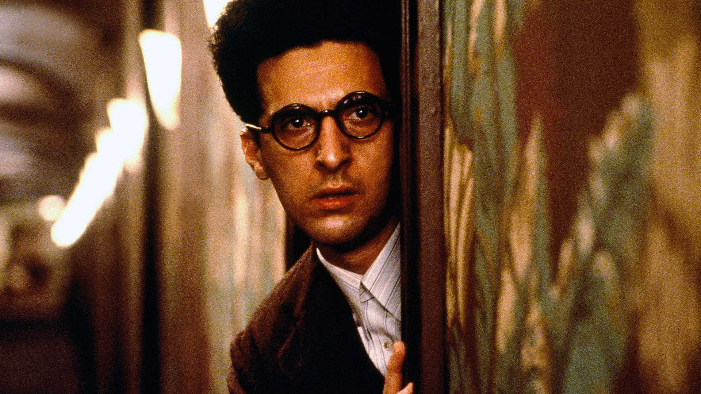

MY THERAPIST SAYS CINEMA

Barton Fink (John Turturro) è un commediografo ossessionato dalla ricerca della “vera letteratura”: una scrittura capace di raccontare l’uomo comune e i suoi conflitti.
Dopo il successo ottenuto a Broadway, viene chiamato a Hollywood per lavorare a una sceneggiatura sul wrestling.
Quello che dovrebbe rappresentare il coronamento della sua carriera si trasforma rapidamente in una paralizzante crisi creativa.
Nel claustrofobico Hotel Earle, Barton incontra Charlie Meadows (John Goodman), vicino di stanza tanto cordiale quanto inquietante.
La presenza di Charlie trascinerà il protagonista in un vortice sempre più ambiguo fatto di paranoia, caos e follia.
I fratelli Coen costruiscono un’opera visionaria e disturbante, sospesa tra satira hollywoodiana, thriller psicologico e incubo surreale.
Barton Fink è un film ricco di simbolismi, capace di confondere continuamente realtà e immaginazione, mantenendo fino alla fine un’atmosfera opprimente e magnetica.
Grottesco, onirico e profondamente metacinematografico, resta uno dei lavori più particolari e affascinanti della filmografia dei Coen.
Patrizia Catania
— paneacult